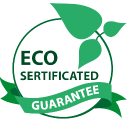

<section class="quality-standarts">
    <div class="quality-standarts__container _container">
        <h2 class="quality-standarts__title title">Международные стандарты качества</h2>
        <ul class="quality-standarts__list list-standarts">
            <li class="list-standarts__item">
                
                <h3 class="list-standarts__title title title_size_m">ECO sertificated</h3>
                <p class="list-standarts__text text text_size_m">В производстве используется экологически чистое сырье,
                    экстракты трав, натуральные компоненты.</p>
            </li>
            <li class="list-standarts__item">
                
                <h3 class="list-standarts__title title title_size_m">GMP</h3>
                <p class="list-standarts__text text text_size_m">Производится с соблюдением требований стандарта Gmp.
                </p>
            </li>
            <li class="list-standarts__item">
                
                <h3 class="list-standarts__title title title_size_m">ISO</h3>
                <p class="list-standarts__text text text_size_m">Наши препараты производятся и контролируются в
                    соответствии со стандартами качества ISO.</p>
            </li>
            <li class="list-standarts__item">
                
                <h3 class="list-standarts__title title title_size_m">Без ГМО</h3>
                <p class="list-standarts__text text text_size_m">Эффективность наших препаратов доказана клинически.</p>
            </li>
        </ul>
    </div>
</section>